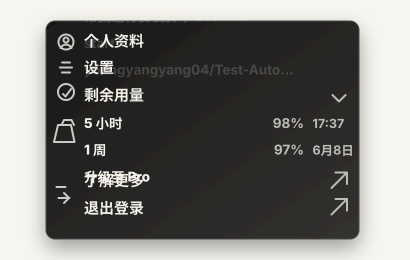

Codex App 额度使用技巧 & 冷知识
这是一条偏实战向的 Codex App 使用笔记：当 5 小时额度快见底时，别急着开新任务，把当前任务整理成一个清晰目标，交给 Goal mode 继续推进，往往能把最后一点额度用得更扎实。

一句话技巧
当 Codex 的 5 小时额度只剩 1% 左右时，可以使用 /goal 命令，或者在 App 里开启目标模式，把当前要完成的事情写成一个明确的完成标准。
目标模式的关键不是“变出新额度”，而是让 Codex 一直盯着同一个结果工作：它会围绕这个目标拆步骤、执行、验证，并在认为任务完成前持续推进。
冷知识：它可能会继续把当前任务跑完
按我的使用观察，即使 5 小时额度显示已经归零，只要当前任务还没结束，Codex 通常仍会尽力把这一轮未完成的工作跑完。也就是说，真正重要的是：在额度快用完之前，先把任务边界说清楚。
开启目标模式以后，这一点会更明显。因为目标文本会变成 Codex 的“完成条件”，它更容易判断还差什么、下一步要做什么，以及什么时候可以收尾。
为什么要在 1% 时用 /goal
- 可以把零散需求收束成一个可检查的目标，减少来回补充。
- 适合长任务收尾，让 Codex 继续做实现、验证和修正。
- 比反复开新线程更稳定，尤其适合已经有上下文的任务。
- 如果任务没有触发需要你选择的分支，它通常可以更顺畅地一路跑下去。
怎么写目标更好
目标不要只写“继续做”，最好写成带结果的句子。例如：
- 把这篇博客发布到首页最新文章，并保证本地页面显示正常。
- 修复登录页移动端样式问题，跑完相关测试，最后总结改了哪些文件。
- 把当前未完成的功能做完，构建通过，避免修改无关文件。
如果目标本身还不清楚，可以先用 /plan 让 Codex 帮你整理步骤，再把整理好的完成标准交给 /goal。
需要注意的地方
这条技巧不是官方额度说明，也不应该理解成可以无限运行。更准确的说法是：目标模式能让 Codex 在长任务里更少迷路，更充分利用当前这轮任务已经获得的执行机会。
还有一个例外：如果 Codex 中途向你提问，尤其是让你做选择题或确认某个风险操作，它就需要你的输入才能继续。想让它更顺利地跑完，就提前把偏好、边界和验收标准写清楚。
总结
我的使用建议是：额度充足时正常聊，额度快到底时不要浪费最后几次交互，把任务改写成一个清晰的 /goal。它不能创造额度，但能让 Codex 更像一个盯结果的执行者，把当前任务尽可能完整地收尾。
相关官方说明： Codex App commands - Goal mode